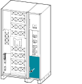
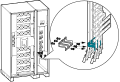

Convert the 75-100 kVA UPS from Dual Mains to Single Mains (Option) Remove the plate in the bottom of the I/O section. Figure 1. Front View of the UPS Cabinet  Install the three provided jumper busbars between the input busbars and the bypass busbars. Figure 2. Front View of the UPS Cabinet 